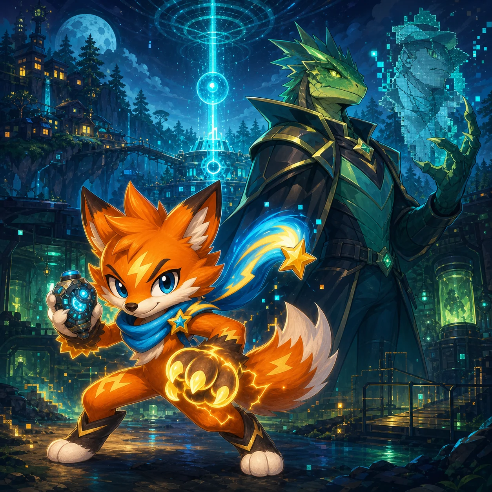

2042 · PRIMO CONTATTO
Velo del Segnale
Le 57 missioni di Fia, il combattimento, la Visione Neurale, l'equipaggiamento e i progressi locali.
MISSIONS 0 / 33
Guida completa di Velo del Segnale
Le 57 missioni di Fia, il combattimento, la Visione Neurale, l'equipaggiamento e i progressi locali.
Mondo e missione
Nel 2042 sparizioni e attacchi si diffondono sulla Terra. Spark Paw Fia arriva a Città Segnale dopo che il video di una Persona Lucertola viene liquidato come falso. Interroga dieci testimoni, attraversa la foresta al chiaro di luna ed entra nel laboratorio neurale abbandonato. Questo primo capitolo è un mondo continuo senza selezione livelli; posizione, livello, equipaggiamento, missioni e storia vengono salvati nel browser.
La storia attuale comprende 57 missioni collegate tra Città Segnale, Foresta del Velo, laboratorio neurale, Ripetitore Moonfall e Osservatorio Ashfall. Interroga testimoni, segui percorsi nascosti, sconfiggi pattuglie, recupera equipaggiamento, decodifica registri e scegli come gestire le prove. Il portale est di Ashfall conduce all'Archivio. L'ultimo segnale attende. Conserva una rotta di andata e ritorno. Rispondere guida la flotta; schermarla protegge le coordinate.
Missione
1–23Nel 2042 sparizioni e attacchi si diffondono sulla Terra. Spark Paw Fia arriva a Città Segnale dopo che il video di una Persona Lucertola viene liquidato come falso. Interroga dieci testimoni, attraversa la foresta al chiaro di luna ed entra nel laboratorio neurale abbandonato. Questo primo capitolo è un mondo continuo senza selezione livelli; posizione, livello, equipaggiamento, missioni e storia vengono salvati nel browser. Parla con ogni testimone prima del cancello. Osserva le aree d’allerta e attira una pattuglia per volta. Usa il colpo sui bruti e sugli incantatori. Attiva la visione reale vicino a scintille ciano e pareti sospette. Contro il comandante, muoviti durante le raffiche, evita la carica e colpisci mentre è stordito.
Indagine su due mappe
24–33Dopo il comandante, parla con Orla per aprire Moonfall. Elimina otto sentinelle, attiva tre registri e torna. I portali restano aperti per le missioni su entrambe le mappe. Registro uno: la flotta Rettiliana fuggì da una luna morente e chiese rifugio. Registro due: Helix intercettò la richiesta e creò camuffamenti dal modello neurale. Registro tre: il comandante proteggeva le prove perché Helix non le cancellasse.
Osservatorio Ashfall
34–45Il Registro d'allarme nomina Ashfall. Helix ha segnato viva una tecnica e ordinato di cancellare il sito. Il portale est di Moonfall conduce ancora lì. Trovala prima dell'epurazione. Può smascherare Helix, ma una diretta rivela Aster. Trasmetti ora o proteggi la testimone. Mantenevo la rete di travestimento Helix. Scoperto che riscriveva i ricordi, ho copiato il manifesto. Hanno bruciato l'osservatorio per cancellarmi. Può smascherare Helix, ma una diretta rivela Aster. Trasmetti ora o proteggi la testimone. Le prove sono sulla rete pubblica. Helix non può più definirle false, ma ora sa dove siamo. Aster e la scatola nera sono al sicuro. Pubblicheremo tramite stazioni fidate senza rivelarla.
Archivio della Luna Cava
46–57Il portale est di Ashfall conduce all'Archivio. L'ultimo segnale attende. Conserva una rotta di andata e ritorno. Rispondere guida la flotta; schermarla protegge le coordinate. Il faro elenca 47 navi civili rinominate detriti da Helix. La frase: Non siamo mai stati invasori. La mappa è scritta come storie familiari. Helix non può seguirla senza sapere quali ricordi sono veri. I bambini hanno imparato il clima di Città Segnale da trasmissioni rubate e chiamano il mondo di Fia rifugio blu. Gli inseguitori sono sconfitti. Rispondere al rifugio o schermare la rotta finché i rifugiati scelgono? Hai risposto al rifugio. I piloti hanno una rotta per Città Segnale e difenderemo ogni arrivo. Hai cancellato le chiavi. Il rifugio resta invisibile e i rifugiati sceglieranno quando mostrarsi.
Comandi e ciclo completo
- Leggi l'obiettivo in alto ed esplora la regione attuale.
- Tocca l'indicatore visibile o premi E per parlare, aprire bauli, attivare registri e usare portali.
- Guarda il nemico e usa Attacco per l'onda di spada o Abilità per il colpo a distanza.
- Attiva la Visione reale vicino agli indizi ciano per scoprire travestimenti, nemici e passaggi nascosti.
- Completa l'obiettivo e riporta le prove a Orla quando lo richiede la storia.
Su desktop muoviti con WASD o frecce. Space/J attacca in mischia, K spara, V cambia visione, E parla o apre bauli, Escape apre il menu. Su mobile usa joystick, Attacco, Abilità e Visione. I nemici pattugliano, inseguono e attaccano; il comandante cambia schema con la salute. La visione normale mostra il mondo percepito dalla maggioranza. La visione reale rivela percorsi ciano, Lucertole camuffate, mostri invisibili, porte segrete e tesori. La lente prototipo non consuma risorse. Il dispositivo stabile dimostra che non cambiavano forma: interferivano con la percezione umana.
Progressione, equipaggiamento e difficoltà
Sconfiggi quindici mostri per ottenere EXP. Ogni livello aumenta salute massima, attacco e difesa. Tre bauli contengono Lama a Impulsi, Armatura Ranger e Amuleto del Segnale; si equipaggiano e salvano subito. Il colpo a distanza ha una breve ricarica, quello ravvicinato è rapido e potente. Dopo il comandante, parla con Orla per aprire Moonfall. Elimina otto sentinelle, attiva tre registri e torna. I portali restano aperti per le missioni su entrambe le mappe. Il Registro d'allarme nomina Ashfall. Helix ha segnato viva una tecnica e ordinato di cancellare il sito. Il portale est di Moonfall conduce ancora lì. Trovala prima dell'epurazione. Può smascherare Helix, ma una diretta rivela Aster. Trasmetti ora o proteggi la testimone. Il portale est di Ashfall conduce all'Archivio. L'ultimo segnale attende. Conserva una rotta di andata e ritorno. Rispondere guida la flotta; schermarla protegge le coordinate.
Consigli d'indagine
- Parla con ogni testimone prima del cancello.
- Osserva le aree d’allerta e attira una pattuglia per volta.
- Usa il colpo sui bruti e sugli incantatori.
- Attiva la visione reale vicino a scintille ciano e pareti sospette.
- Contro il comandante, muoviti durante le raffiche, evita la carica e colpisci mentre è stordito.
Nota di design
Il mondo continuo tiene uniti luoghi e indizi. La Visione reale non consuma energia: la scelta riguarda l'osservazione. Scorciatoie desktop e pulsanti mobili eseguono le stesse azioni, mentre le 57 missioni registrano vere scoperte, battaglie, equipaggiamento, prove e rapporti.
Giocatore, dispositivo e salvataggio
Il capitolo termina sconfiggendo il primo comandante e recuperando il dispositivo. Se Fia perde tutta la salute, torna al punto sicuro mantenendo livello, equipaggiamento, missioni e bersagli principali. Non serve un account. I progressi restano nella memoria di questo browser. Non serve un account. Missioni, EXP, livello, salute, equipaggiamento, bauli, sconfitte, checkpoint e scelte vengono salvati automaticamente nel browser. Il movimento non scrive ogni fotogramma. L'Ancora del Segnale da cinque Diamanti è un aumento permanente opzionale della salute.
Domande frequenti
- Quante missioni e regioni ci sono?
- Ci sono 57 missioni e sei regioni principali; la storia apre i portali di collegamento.
- La Visione reale consuma energia?
- No. Dopo aver sbloccato la lente puoi alternarla liberamente per rivelare minacce, travestimenti, vie e tesori.
- Posso rimuovere l'equipaggiamento?
- Sì. Il menu mostra gli effetti e rimuovere un oggetto non ne cancella il possesso.
- Cosa succede se Fia cade?
- Fia torna al checkpoint sicuro conservando progressi permanenti e stati importanti.
- Quanto dura l'indagine?
- Dipende da esplorazione e combattimento. I quattro capitoli possono essere giocati in più sessioni dal salvataggio locale.